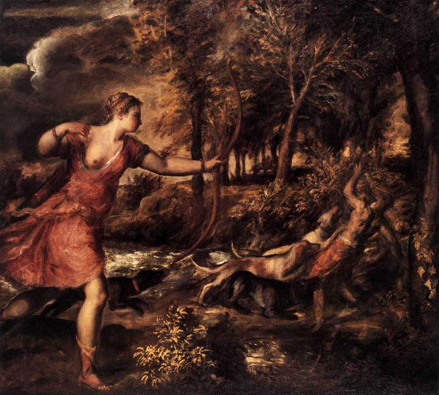
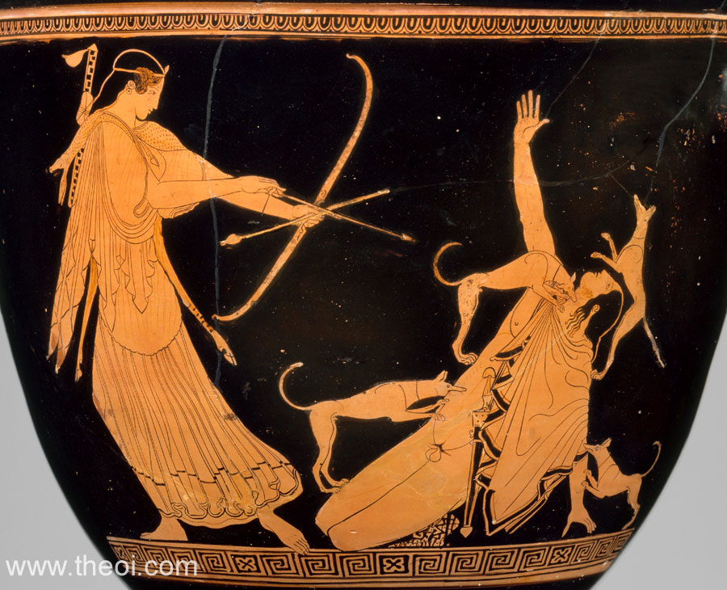
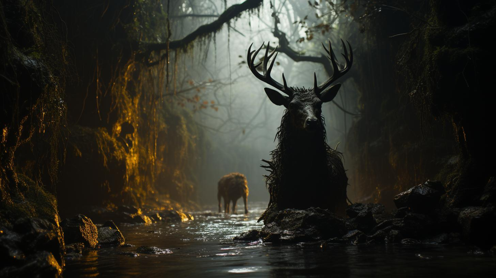

Actaeon
Actaeon , a figure from Greek mythology, is primarily known for his tragic story involving the goddess Artemis, highlighting themes of transformation, punishment, and the power of the gods. Actaeon's tale underscores the peril of mortal encounters with the divine, especially when boundaries are transgressed.
The Story of Actaeon
Background
Actaeon was a skilled hunter and the son of the minor god Aristaeus and Autonoë, one of the daughters of Cadmus, the founder of Thebes. He was trained by the centaur Chiron, who also tutored other notable heroes such as Achilles. Actaeon was renowned for his prowess in hunting, often leading expeditions with his pack of loyal hounds.
The Encounter with Artemis
One fateful day, while hunting in the forest of Cithaeron, Actaeon stumbled upon a secluded valley where Artemis, the goddess of the hunt and chastity, was bathing with her nymphs. Unaware of the divine presence, Actaeon accidentally witnessed the goddess in her naked splendor.
Artemis, known for her fierce protection of her purity and privacy, was enraged by Actaeon's intrusion. Though the incident was accidental, the gods often acted without leniency when it came to preserving their honor and sanctity.
The Transformation and Punishment
In her wrath, Artemis decided to punish Actaeon in a way that would prevent him from recounting what he had seen. She transformed him into a stag, a form that symbolized both his previous life as a hunter and his new, vulnerable status as prey.
Adding to the tragedy, Actaeon's own hunting dogs, failing to recognize their master, were driven into a frenzy by the scent of the stag. They chased him through the forest, and despite his attempts to flee, they eventually caught and tore him apart. Actaeon's transformation and subsequent death were not only a punishment but also a profound irony— the hunter becoming the hunted.